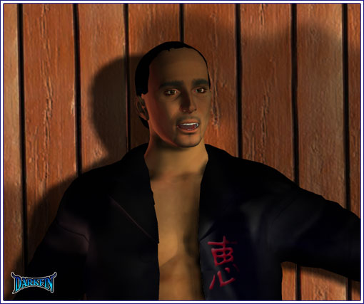
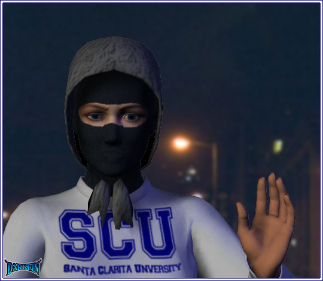
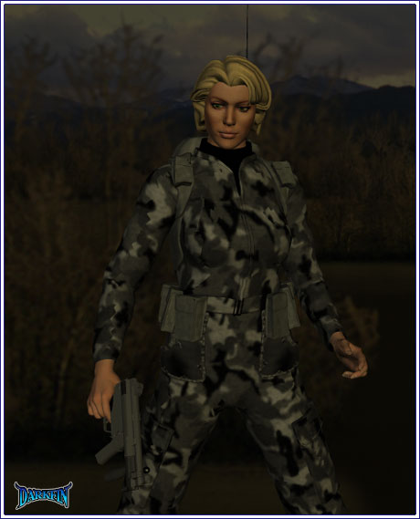
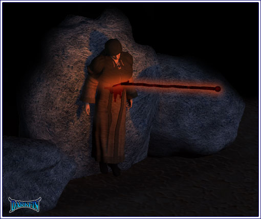
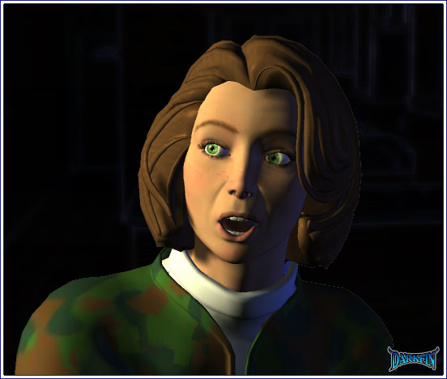

Tim Wh—where?
Older Deputy Well, well, well — it's Mr. Hagidgin!
Tim (Startled) What did you do to me?
Older Deputy We haven't done anything— yet
Younger Deputy But I'm sure your girlfriend has done plenty
Tim (Nearly choking on the words) GIRLFRIEND?
Other Deputy Ray's stick can attest to that
Tim Why am I in a robe on my porch?
Younger Deputy She's a real kinky one, you lucky bastard
Older Deputy You know, I could have you arrested for not following my orders earlier
Other Deputy Let's cut the guy some slack, I'd do the same if I had a hot blonde like that waiting for me
Younger Deputy Especially since, well, since you don't seem to be her type
Tim Hot blonde? — WOMAN? — um, no, this is all wrong
Older Deputy Maybe you can enlighten us?
Tim This is my brother Geoffrey Hajanian's cabin — you can call him and check — you can look at my license again and verify my name—
Tim No way—
Tim (Banging on it) MY KEYS
Younger Deputy (Whispering to Tim) Is this some kind of role playing thing? — think she'd be into a gang bang? — we already have the uniforms
Tim YOU NEED TO STEP AWAY FROM ME, NOW
Older Deputy I'm getting tired of this, boys — I say we take him in— exactly the way he is
Tim WHO THE HELL IS THIS BITCH?
Tim Blonde you say?
Other Deputy Does she wear wigs?
Tim (Ignoring him) Erika— could it possibly be? — why?
Tim OH MY GOD, SHE HAS MY BAG
Younger Deputy (Excited) What's in the bag?
Tim (Slamming his fist on the door) DAMMIT ALL
Older Deputy I'm done with this, cuff him and bring him to the station!
Younger Deputy What about his girl?
Older Deputy I'll let you stay here for awhile and "play" but bring her down when you're done
Younger Deputy Awesome!
Other Deputy Why does he get to have all the fun?
Tim (Muttering) I really hope it's you, Erika— or maybe not
Morrigan (Appreciative) Beautiful
Erika It is nice to know you will always find the beauty, no matter the situation
Morrigan (Raises an eyebrow at her) Or person
Erika Perhaps "creature" is more appropriate
Morrigan Perhaps "human" is
Erika We are almost there
Morrigan I would feel better if you came with me
Erika I will return for you but there are matters that need taking care of
Morrigan I know, you need to revert or morph or whatever it is you do to become a Sea Monkey
Erika The proper term is transmogrification
Morrigan Didn't I mention earlier how I forgot to pay attention in biology?
Erika I seem to recall that
Erika You will have to walk it the rest of the way, you are only about a quarter mile from your home
Morrigan (Stepping out of the jeep) HOUSE— that place was never really a home, now more than ever
Erika But it is the safest place for you right now
Erika Be sure to take it with you
Morrigan NUH-UH, I do NOT need that added worry
Erika It might be useful
Morrigan Then you use it, not me
Erika Fine, we have no time to argue
Morrigan What are you doing?
Erika Walking you to your door
Morrigan This has been a really wild date but you don't have to walk with me
Erika I want to make sure—
Morrigan NO — I said I'll be fine!
Morrigan Just like the president and the vice president are rarely in the same room, it's better this way— in case something should happen to one of us
Erika We will be fine but you are correct in playing it safe
Morrigan (Moving closer to Erika) Besides, the quicker you do what needs to be done, the quicker you come back to me
Erika Agreed — I need to find the trident and then I'll return to the bay — expect me in the morning
Morrigan Do you want chicken eggs or salmon eggs?
Erika I want you to relax and try to remember as much as you can about what happened with The Clergy
Morrigan I wish I could forget
Erika Amethyst is no threat to you— when she returns, ask her about her father
Morrigan (Sweet smile) Fin has skin— who knew?
Morrigan We still need to talk more— later

Erika Heavy Metal
Morrigan (Halting) What?
Erika You asked me before what my favorite kind of music was— I enjoyed heavy metal at one time
Morrigan (Watching) Why did I think it would be Yanni?
Erika (Speaking French) Connect me to the Meeramar Zurich office please— hello, Chantal, this is Erika — yes, I am fine, thank you - I need you to convey a message to my brother—
Griffin (Into phone) Yes, father — I understand — we'll be there shortly
KJ (Refusing it) I couldn't be anymore numb and still function
Griffin I just need you to function for a few more hours
KJ Care to explain to me why we're headed in the direction of the volcano?
Griffin We need to be there
KJ Okaaay
KJ Driver, turn around and take me back to Duquesa Bay
Griffin What are you doing? — DRIVER, IGNORE MR. VON MEER'S REQUEST
KJ DRIVER, DO AS I SAY — I HAVE HAD JUST ABOUT ENOUGH OF YOU, GRIF — I NEED TO GO HOME TO MOM, WHO COULD VERY WELL BE THE LAST OF MY FAMILY, AND YOU DON'T EVEN HAVE THE DECENCY TO TELL ME WHERE WE'RE GOING
Griffin (Gasping) I'LL TELL YOU, I'LL TELL YOU— LET GO
Griffin God almighty, you're as bad as your sister
KJ WHAT DOES THAT MEAN? — I SWEAR, IF YOU HURT HER—
Griffin Bad choice of words, sorry — for the last time, I love Erika more than my own life, I could never hurt her
KJ (Looking out the window) Then— where is she?
Griffin (Patting his shoulder) We'll find her — I promise — but we need to attend this meeting, first
KJ Attend WHAT meeting? — for the last time, Griffin, where in the hell are we going and why?
Griffin Remember what I told you about the Nereidium?
KJ Is that what this is for? — we're on a wild goose chase for your magic rocks?
Griffin Actually, Kage, it's metal—
KJ (Rubbing his face) Aw, gimme a break!
Griffin Why, yes— yes, he's right here, hold on
KJ (Taking the phone) Who is it?
Griffin Chantal from Zurich
KJ That's odd— hello, Chantal
KJ WHERE IS SHE?
Griffin WHAT?
KJ ERIKA JUST SPOKE TO HER
Griffin WHERE DID SHE CALL FROM?
KJ HOLD ON, HOLD ON— did she say anything else?
KJ HELLO, HELLO? — CHANTAL? — DAMMIT, GET OUT OF THE TUNNEL
Griffin We can't—
Griffin We're here

Joenne (Into her radio) Looks like we've found Major Dawkins
Agent I wonder if that belonged to the bastard that got him?
Joenne Bag it, we need everything we can get from these freaks
Agent At least we got a few of them this time
Joenne (Kicking a tree stump) Yeah, and we lost 27 of us in the process
Agent DC is expecting a report soon
Joenne Send the same one we've been sending all along — The Clergy is getting closer to the Nereidium and we're still fucking helpless against them!
Agent Do you want me to use those exact words?
Joenne Be creative— and then go sweep the northern sector — report back in ten minutes
Joenne (Freezing) Hello!
Joenne (Into her radio) ALL TEAMS, NEED ASSISTANCE AT ONCE, LOOKS LIKE WE GOT OURSELVES A STRAGGLER
Agent (Over the radio) ON OUR WAY
Joenne THE TARGET IS STATIONARY AND AT THE FOLLOWING COORDINATES—
Joenne I'M COMING FOR YOU, HOOD BOY

Joenne HOLY SHIT
Agent (Over the radio) AGENT MIRABELLO, ARE YOU ALRIGHT?
Joenne (Half smile) Well now, where's your Mama?
Agent COME IN, JOENNE, DO YOU COPY?
Joenne (Into her radio) I'M FINE — IT WAS A FALSE READING — CANCEL THE BACKUP, REPEAT, CANCEL THE BACKUP
Agent In that case, we could use your help over here — we've spotted a civilian vehicle approaching on a fire road
Joenne Is it the Jeep we spotted earlier?
Agent Negative — it's press— a KCON newsvan
Joenne Aw, great!
Agent The Jeep went in the opposite direction but this is coming straight at us — we need your order to fire—
Joenne HOLD ON, I MIGHT KNOW THESE PEOPLE
Agent You know our directive about the media — we can't let them get any closer!
Joenne HOLD YOUR FIRE UNTIL I CHECK IT OUT FOR MYSELF, THAT'S AN ORDER
Agent We cannot take the risk of them broadcasting any of this — we need to eliminate them ASAP, chalk up the disappearance to the volcano
Joenne (Bowing her head) Wait for them to cross the grove, then fire
Joenne (Looking through her scope) Wait— who is that?
Justine JOENNE, JOENNE, ARE YOU AROUND HERE?
Joenne JUSTINE
Agent FIRE
Joenne (Tackling the agent) NO, THAT'S MY SISTER
Morrigan (Whispering) I'm starting to feel hot and cold again— this is not good
Morrigan Tallulah
Amethyst Don't worry, I took good care of her for you
